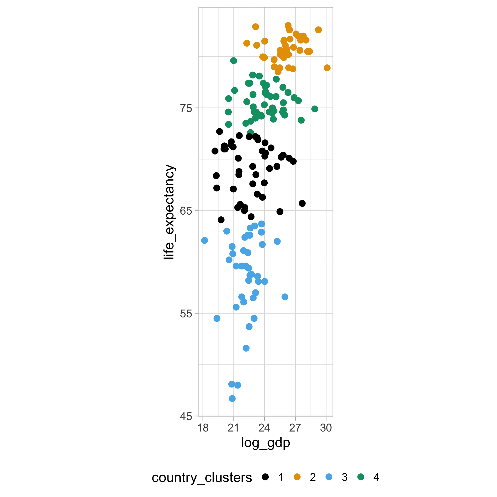
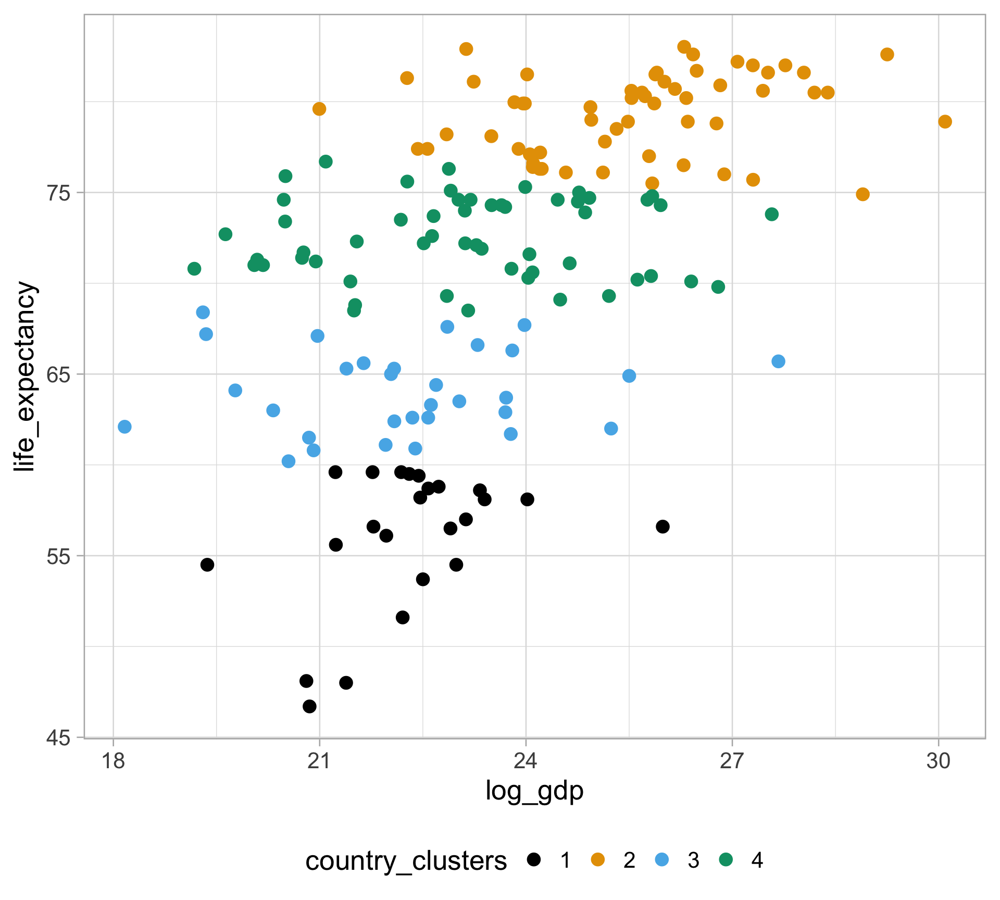
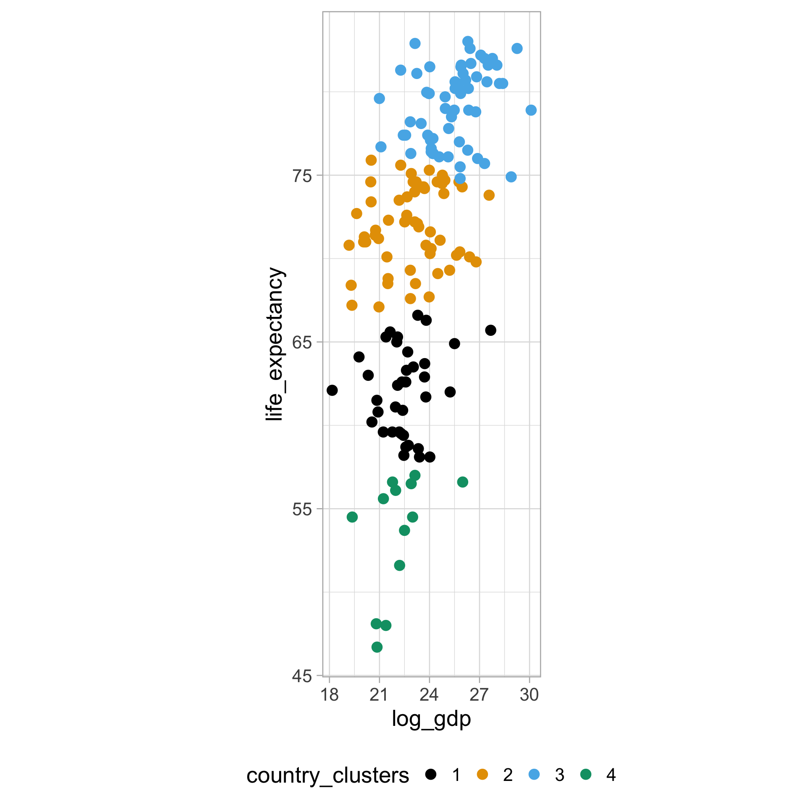
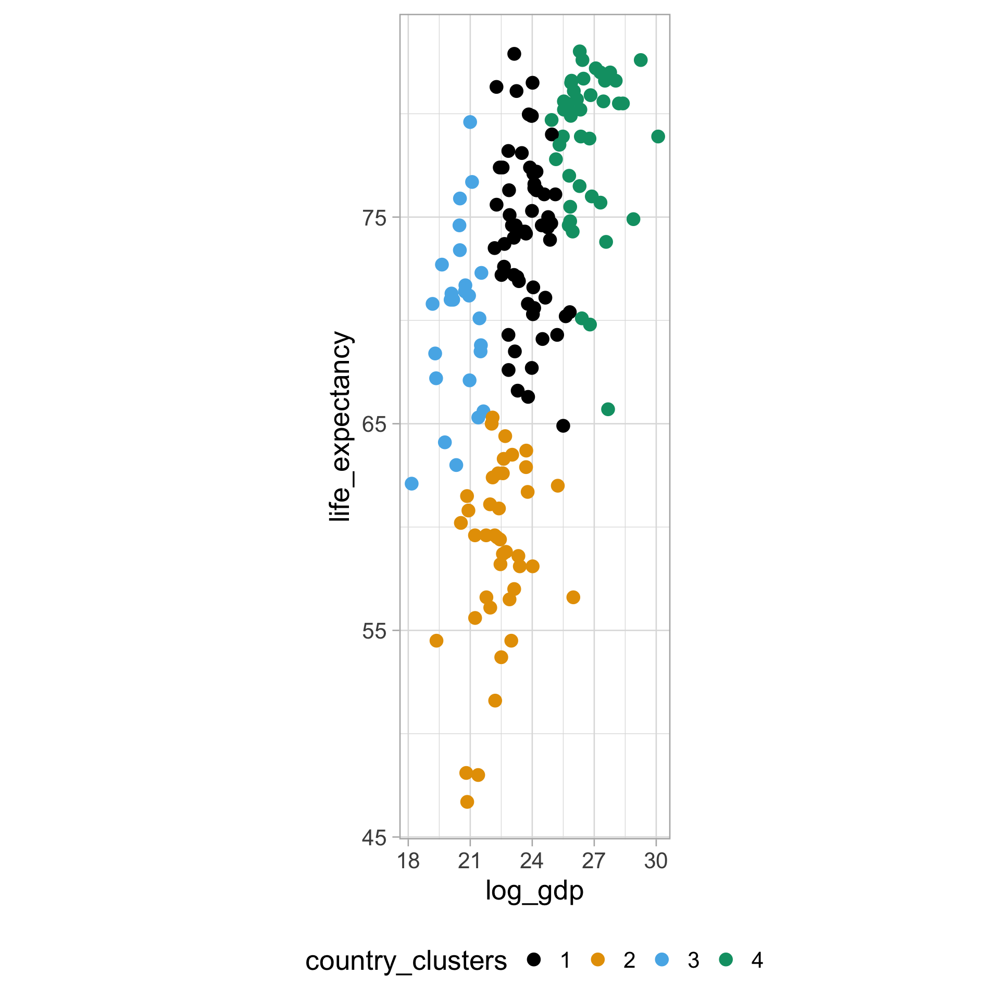
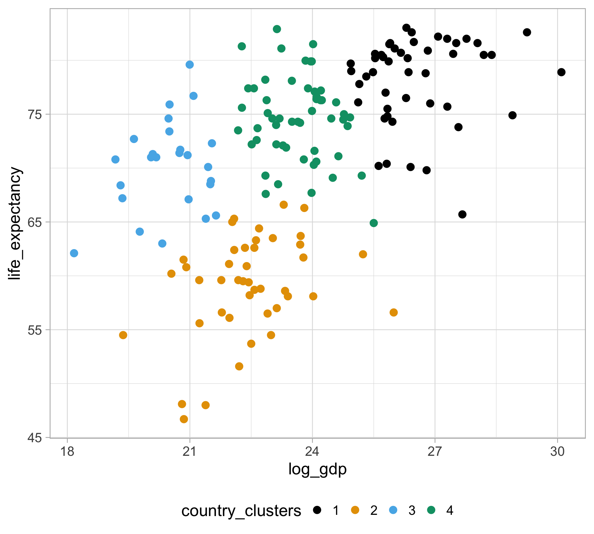
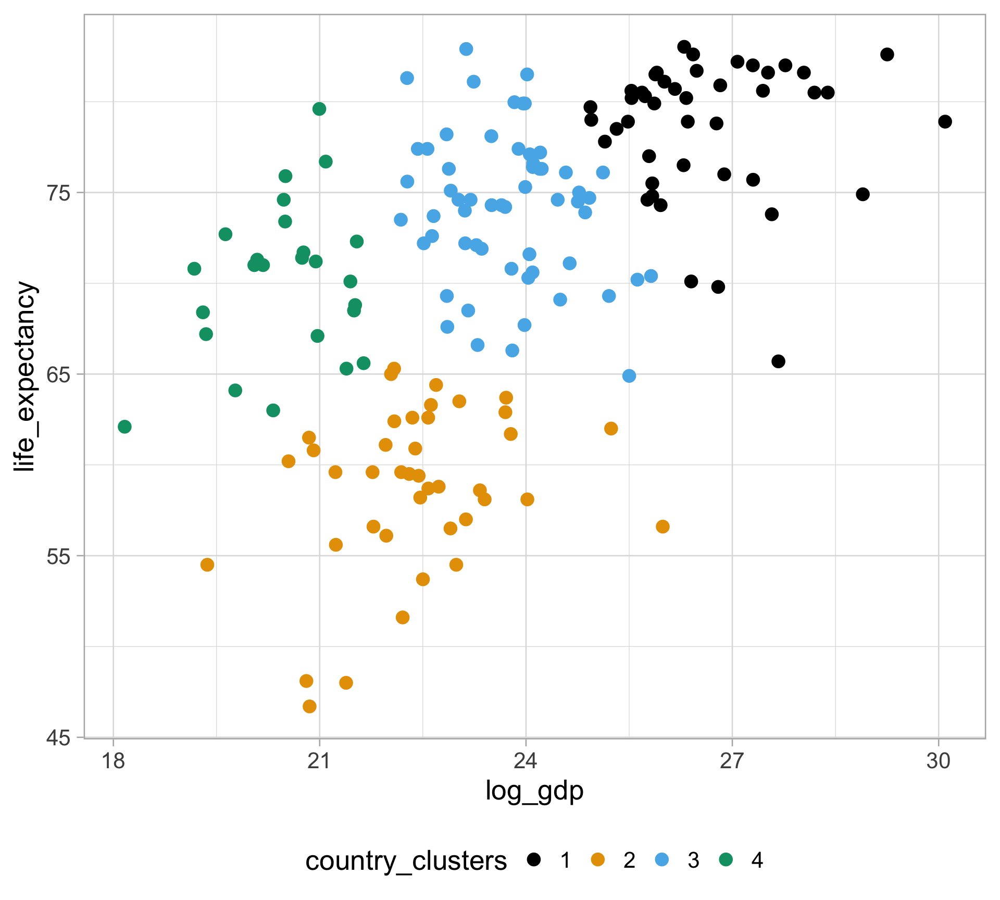
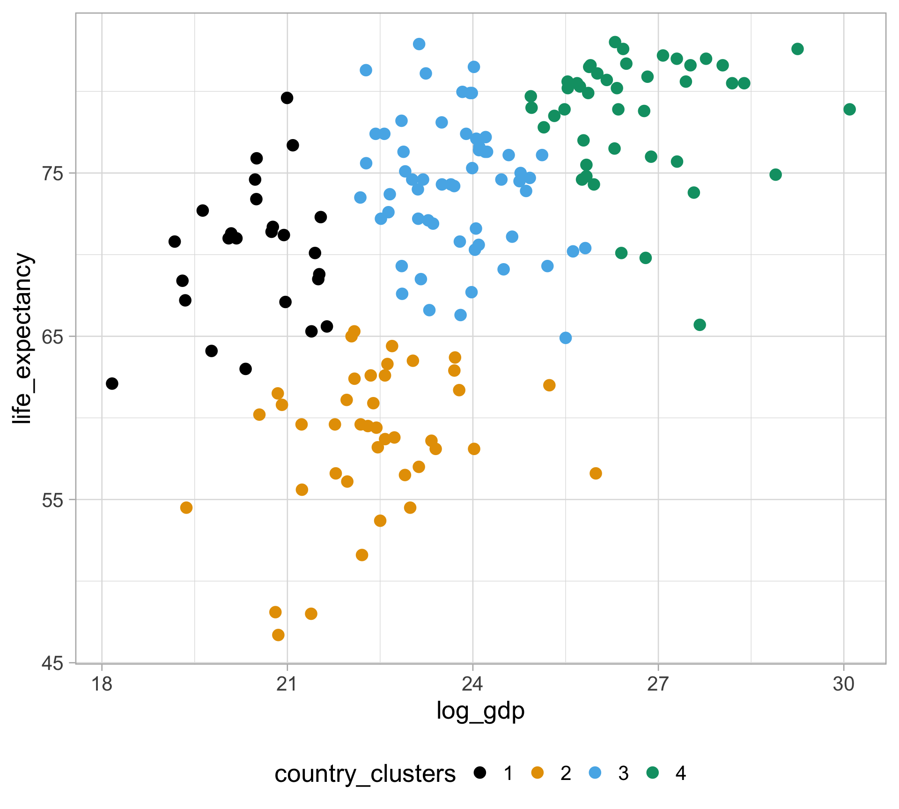
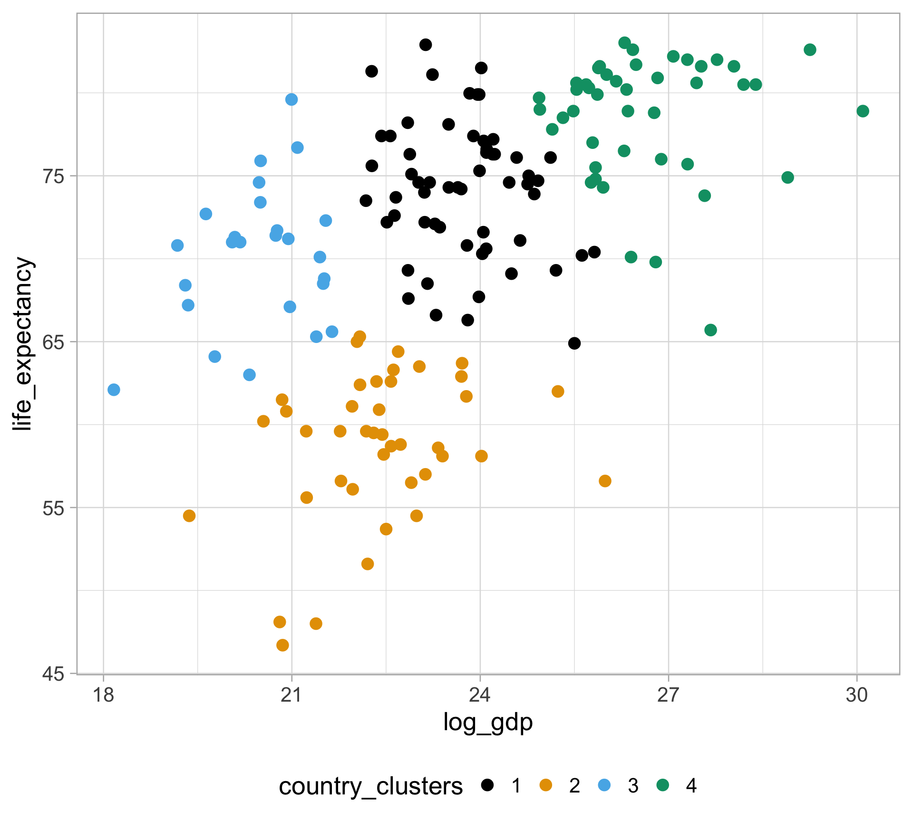
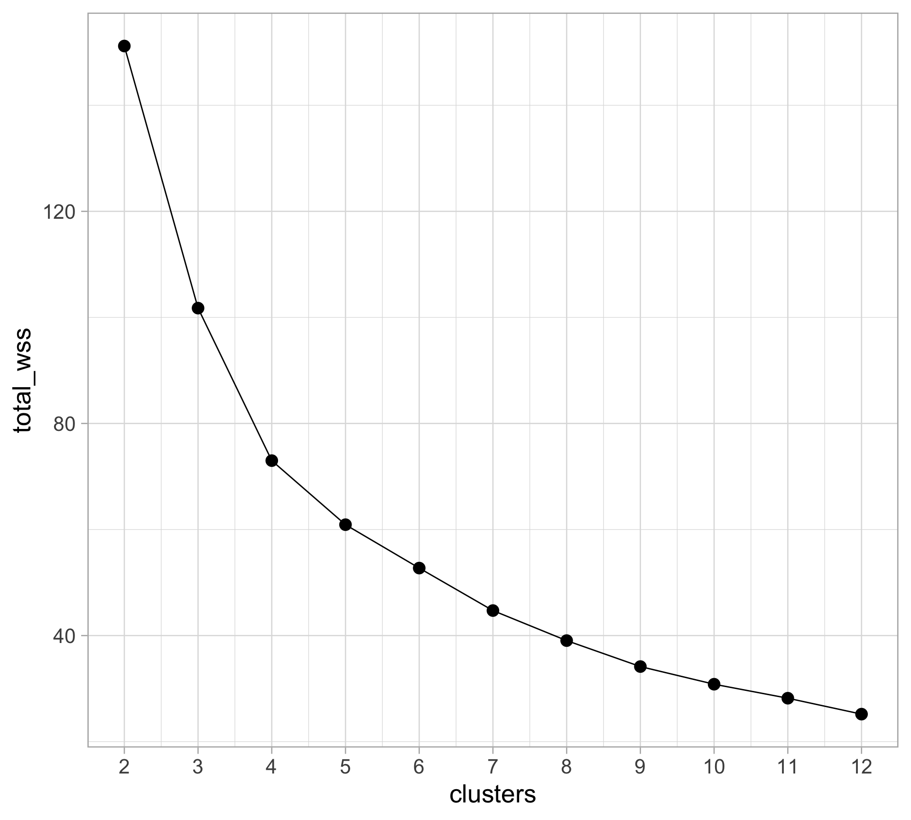
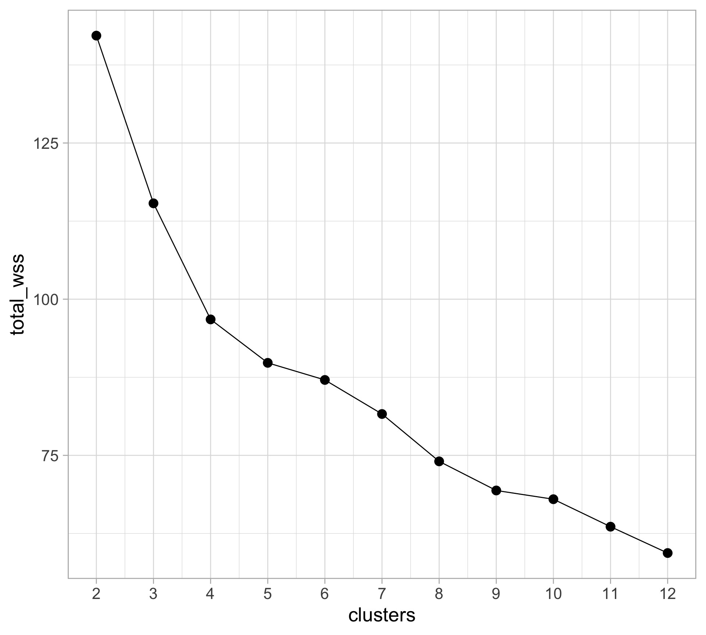

Unsupervised learning: \(k\)-means clustering
SURE 2024
Department of Statistics & Data Science
Carnegie Mellon University
Background
Statistical learning
Statistical learning refers to a set of tools for making sense of complex datasets. — Preface of ISLR:
General setup: Given a dataset of \(p\) variables (columns) and \(n\) observations (rows) \(x_1,\dots,x_n\).
For observation \(i\), \[x_{i1},x_{i2},\ldots,x_{ip} \sim P \,,\] where \(P\) is a \(p\)-dimensional distribution that we might not know much about a priori
Statistical learning vs. machine learning???
Plenty of overlap - both fields focus on supervised and unsupervised problems
- Machine learning has a greater emphasis on large scale applications and prediction accuracy
- Statistical learning emphasizes models and their interpretability, and the assessment of uncertainty
The distinction has become more and more blurred, and there is a great deal of “cross-fertilization”
“Statistical machine learning”???
Supervised learning
Response variable \(Y\) in one of the \(p\) variables (columns)
The remaining \(p-1\) variables are predictor measurements \(X\)
Regression: \(Y\) is quantitative
Classification: \(Y\) is categorical
Objective: Given training data \((x_1, y_1), ..., (x_n, y_n)\)
Accurately predict unseen test cases
Understand which features affect the response (and how)
Assess the quality of our predictions and inferences
Unsupervised learning
No response variable (i.e. data are not labeled)
Only given a set of features measured on a set of observations
Objective: understand the variation and grouping structure of a set of unlabeled data
- e.g., discover subgroups among the variables or among the observations
Difficult to know how “good” you are doing
Unsupervised learning
It is often easier to obtain unlabeled data than labeled data
Unsupervised learning is more subjective than supervised learning
There is no simple goal for the analysis, such as prediction of a response
Unsupervised learning can be useful as a pre-processing step for supervised learning
Think of unsupervised learning as an extension of EDA - there’s no unique right answer!
Clustering (cluster analysis)
Clustering refers to a very broad set of techniques for finding subgroups, or clusters, in a data set — ISLR
Goals: partition of the observations into distinct clusters so that
observations within clusters are more similar to each other
observations in different clusters are more different from each other
- This often involves domain-specific considerations based on knowledge of the data being studied
Distance between observations
- What does it means for two or more observations to be similar or different?
This require characterizing the distance between observations
- Clusters: groups of observations that are “close” together
- This is easy to do for 2 quantitative variables: just make a scatterplot
But how do we define “distance” beyond 2D data?
Let \(\boldsymbol{x}_i = (x_{i1}, \dots, x_{ip})\) be a vector of \(p\) features for observation \(i\)
Question of interest: How “far away” is \(\boldsymbol{x}_i\) from \(\boldsymbol{x}_j\)?
When looking at a scatterplot, we’re using Euclidean distance \[d(\boldsymbol{x}_i, \boldsymbol{x}_j) = \sqrt{(x_{i1} - x_{j1})^2 + \dots + (x_{ip} - x_{jp})^2}\]
Distances in general
There’s a variety of different types of distance metrics: Manhattan, Mahalanobis, Cosine, Kullback-Leibler, Hellinger, Wasserstein
We’re just going to focus on Euclidean distance
- Let \(d(\boldsymbol{x}_i, \boldsymbol{x}_j)\) denote the pairwise distance between two observations \(i\) and \(j\)
Identity: \(\boldsymbol{x}_i = \boldsymbol{x}_j \Leftrightarrow d(\boldsymbol{x}_i, \boldsymbol{x}_j) = 0\)
Non-negativity: \(d(\boldsymbol{x}_i, \boldsymbol{x}_j) \geq 0\)
Symmetry: \(d(\boldsymbol{x}_i, \boldsymbol{x}_j) = d(\boldsymbol{x}_j, \boldsymbol{x}_i)\)
Triangle inequality: \(d(\boldsymbol{x}_i, \boldsymbol{x}_j) \leq d(\boldsymbol{x}_i, \boldsymbol{x}_k) + d(\boldsymbol{x}_k, \boldsymbol{x}_j)\)
Distance Matrix: matrix \(D\) of all pairwise distances
\(D_{ij} = d(\boldsymbol{x}_i, \boldsymbol{x}_j)\)
where \(D_{ii} = 0\) and \(D_{ij} = D_{ji}\)
\[D = \begin{pmatrix} 0 & D_{12} & \cdots & D_{1n} \\ D_{21} & 0 & \cdots & D_{2n} \\ \vdots & \vdots & \ddots & \vdots \\ D_{n1} & \cdots & \cdots & 0 \end{pmatrix}\]
Units matter in clustering
One variable may dominate others when computing Euclidean distance because its range is much larger
Can standardize each variable in the dataset to have mean 0 and standard deviation 1 with
scale()But we may value the separation in that variable! (so just be careful…)
\(k\)-means clustering
\(k\)-means clustering
- Goal: partition the observations into a pre-specified number of clusters
Let \(C_1, \dots, C_K\) denote sets containing indices of observations in each of the \(k\) clusters
- if observation \(i\) is in cluster \(k\), then \(i \in C_k\)
We want to minimize the within-cluster variation \(W(C_k)\) for each cluster \(C_k\) (i.e. the amount by which the observations within a cluster differ from each other)
This is equivalent to solving \[\underset{C_1, \dots, C_K}{\text{minimize }} \Big\{ \sum_{k=1}^K W(C_k) \Big\}\]
In other words, we want to partition the observations into \(K\) clusters such that the total within-cluster variation, summed over all K clusters, is as small as possible
\(k\)-means clustering
How do we define within-cluster variation?
Use the (squared) Euclidean distance \[W(C_k) = \frac{1}{|C_k|}\sum_{i,j \in C_k} d(x_i, x_j)^2 \,,\] where \(|C_k|\) denote the number of observations in cluster \(k\)
Commonly referred to as the within-cluster sum of squares (WSS)
So how do we solve this?
Lloyd’s algorithm
Choose \(k\) random centers, aka centroids
Assign each observation closest center (using Euclidean distance)
Repeat until cluster assignment stop changing:
Compute new centroids as the averages of the updated groups
Reassign each observations to closest center
Converges to a local optimum, not the global
Results will change from run to run (set the seed!)
Takes \(k\) as an input!
Gapminder data
Health and income outcomes for 184 countries from 1960 to 2016 from the famous Gapminder project
Rows: 10,545
Columns: 9
$ country <fct> "Albania", "Algeria", "Angola", "Antigua and Barbuda"…
$ year <int> 1960, 1960, 1960, 1960, 1960, 1960, 1960, 1960, 1960,…
$ infant_mortality <dbl> 115.40, 148.20, 208.00, NA, 59.87, NA, NA, 20.30, 37.…
$ life_expectancy <dbl> 62.87, 47.50, 35.98, 62.97, 65.39, 66.86, 65.66, 70.8…
$ fertility <dbl> 6.19, 7.65, 7.32, 4.43, 3.11, 4.55, 4.82, 3.45, 2.70,…
$ population <dbl> 1636054, 11124892, 5270844, 54681, 20619075, 1867396,…
$ gdp <dbl> NA, 13828152297, NA, NA, 108322326649, NA, NA, 966778…
$ continent <fct> Europe, Africa, Africa, Americas, Americas, Asia, Ame…
$ region <fct> Southern Europe, Northern Africa, Middle Africa, Cari…GDP is severely skewed right…
Some initial cleaning…
Each row is at the
country-yearlevelFocus on data for 2011 where
gdpis not missingLog-transform
gdp
\(k\)-means clustering example (gdp and life_expectancy)
- Use the
kmeans()function, but must provide number of clusters \(k\)
init_kmeans <- clean_gapminder |>
select(log_gdp, life_expectancy) |>
kmeans(algorithm = "Lloyd", centers = 4, nstart = 1)
clean_gapminder |>
mutate(
country_clusters = as.factor(init_kmeans$cluster)
) |>
ggplot(aes(x = log_gdp, y = life_expectancy,
color = country_clusters)) +
geom_point(size = 4) +
ggthemes::scale_color_colorblind() +
theme(legend.position = "bottom") 
Careful with units…
- Use
coord_fixed()so that the axes match with unit scales

Standardize the variables!
- Use the
scale()function to first standardize the variables, \(\frac{\text{value} - \text{mean}}{\text{sd}}\)
clean_gapminder <- clean_gapminder |>
mutate(
std_log_gdp = as.numeric(scale(log_gdp, center = TRUE, scale = TRUE)),
std_life_exp = as.numeric(scale(life_expectancy, center = TRUE, scale = TRUE))
)
std_kmeans <- clean_gapminder |>
select(std_log_gdp, std_life_exp) |>
kmeans(algorithm = "Lloyd", centers = 4, nstart = 1)
clean_gapminder |>
mutate(
country_clusters = as.factor(std_kmeans$cluster)
) |>
ggplot(aes(x = log_gdp, y = life_expectancy,
color = country_clusters)) +
geom_point(size = 4) +
ggthemes::scale_color_colorblind() +
theme(legend.position = "bottom") +
coord_fixed()
Standardize the variables!
And if we run it again?
We get different clustering results!
another_kmeans <- clean_gapminder |>
select(std_log_gdp, std_life_exp) |>
kmeans(algorithm = "Lloyd", centers = 4, nstart = 1)
clean_gapminder |>
mutate(
country_clusters = as.factor(another_kmeans$cluster)
) |>
ggplot(aes(x = log_gdp, y = life_expectancy,
color = country_clusters)) +
geom_point(size = 4) +
ggthemes::scale_color_colorblind() +
theme(legend.position = "bottom")Results depend on initialization
Keep in mind: the labels / colors are arbitrary

Fix randomness issue with nstart
Run the algorithm nstart times, then pick the results with lowest total within-cluster variation \[\text{total WSS} = \sum_{k=1}^K W(C_k)\]
nstart_kmeans <- clean_gapminder |>
select(std_log_gdp, std_life_exp) |>
kmeans(algorithm = "Lloyd", centers = 4, nstart = 30)
clean_gapminder |>
mutate(
country_clusters = as.factor(nstart_kmeans$cluster)
) |>
ggplot(aes(x = log_gdp, y = life_expectancy,
color = country_clusters)) +
geom_point(size = 4) +
ggthemes::scale_color_colorblind() +
theme(legend.position = "bottom")
By default R uses Hartigan–Wong method
Updates based on changing a single observation
Computational advantages over re-computing distances for every observation
default_kmeans <- clean_gapminder |>
select(std_log_gdp, std_life_exp) |>
kmeans(algorithm = "Hartigan-Wong",
centers = 4, nstart = 30)
clean_gapminder |>
mutate(
country_clusters = as.factor(default_kmeans$cluster)
) |>
ggplot(aes(x = log_gdp, y = life_expectancy,
color = country_clusters)) +
geom_point(size = 4) +
ggthemes::scale_color_colorblind() +
theme(legend.position = "bottom")Very little differences for our purposes…

Better alternative to nstart: \(k\)-means++
Objective: initialize the cluster centers before proceeding with the standard \(k\)-means clustering algorithm
Intuition:
randomly choose a data point the first cluster center
each subsequent cluster center is chosen from the remaining data points with probability proportional to its squared distance from the point’s closest existing cluster center
\(k\)-means++
Pick a random observation to be the center \(c_1\) of the first cluster \(C_1\)
- This initializes a set \(\text{Centers} = \{c_1 \}\)
Then for each remaining cluster \(c^* \in 2, \dots, K\):
For each observation (that is not a center), compute \(D(x_i) = \underset{c \in \text{Centers}}{\text{min}} d(x_i, c)\)
- Distance between observation and its closest center \(c \in \text{Centers}\)
- Randomly pick a point \(x_i\) with probability: \(\displaystyle p_i = \frac{D^2(x_i)}{\sum_{j=1}^n D^2(x_j)}\)
As distance to closest center increases, the probability of selection increases
Call this randomly selected observation \(c^*\), update \(\text{Centers} = \text{Centers} \cup c^*\)
Then run \(k\)-means using these \(\text{Centers}\) as the starting points
\(k\)-means++ in R using flexclust
library(flexclust)
init_kmeanspp <- clean_gapminder |>
select(std_log_gdp, std_life_exp) |>
kcca(k = 4, control = list(initcent = "kmeanspp"))
clean_gapminder |>
mutate(
country_clusters = as.factor(init_kmeanspp@cluster)
) |>
ggplot(aes(x = log_gdp, y = life_expectancy,
color = country_clusters)) +
geom_point(size = 4) +
ggthemes::scale_color_colorblind() +
theme(legend.position = "bottom")Note the use of @ instead of $…

So, how do we choose the number of clusters?

So, how do we choose the number of clusters?
There is no universally accepted way to conclude that a particular choice of \(k\) is optimal!
One reason you should be intensely skeptical of clustering results — including your own! — is that there is currently very little theory about how to find the right number of clusters. It’s not even completely clear what “the right number of clusters” means!
Popular heuristic: elbow plot (use with caution)
Look at the total within-cluster variation as a function of the number of clusters
# number of clusters to search over
n_clusters_search <- 2:12
# iterate over each k to compute total wss
kmeans_search <- n_clusters_search |>
map(gapminder_kmeans) |>
bind_rows()
kmeans_search |>
ggplot(aes(x = clusters, y = total_wss)) +
geom_line() +
geom_point(size = 4) +
scale_x_continuous(breaks = n_clusters_search)Popular heuristic: elbow plot (use with caution)
Choose \(k\) where marginal improvements is low at the bend (hence the elbow)
This is just a guideline and should not dictate your choice of \(k\)
Gap statistic is a popular choice (see clusGap function in cluster package)
Later on: model-based approach to choosing the number of clusters

Appendix: elbow plot with flexclust
gapminder_kmpp <- function(k) {
kmeans_results <- clean_gapminder |>
select(std_log_gdp, std_life_exp) |>
kcca(k = k, control = list(initcent = "kmeanspp"))
kmeans_out <- tibble(
clusters = k,
total_wss = sum(kmeans_results@clusinfo$size *
kmeans_results@clusinfo$av_dist)
)
return(kmeans_out)
}
n_clusters_search <- 2:12
kmpp_search <- n_clusters_search |>
map(gapminder_kmpp) |>
bind_rows()
kmpp_search |>
ggplot(aes(x = clusters, y = total_wss)) +
geom_line() +
geom_point(size = 4) +
scale_x_continuous(breaks = n_clusters_search)
Appendix: \(k\)-means for image segmentation and compression
Goal: partition an image into multiple segments, where each segment typically represents an object in the image
Treat each pixel in the image as a point in 3-dimensional space comprising the intensities of the (red, blue, green) channels
Treat each pixel in the image as a separate data point
Apply \(k\)-means clustering and identify the clusters
All the pixels belonging to a cluster are treated as a segment in the image
Then for any \(k\), reconstruct the image by replacing each pixel vector with the (red, blue, green) triplet given by the center to which that pixel has been assigned
Appendix: \(k\)-means for image segmentation and compression
# https://raw.githubusercontent.com/36-SURE/36-SURE.github.io/main/data/spongebob.jpeg
set.seed(2)
library(jpeg)
img_raw <- readJPEG("../data/spongebob.jpeg")
img_width <- dim(img_raw)[1]
img_height <- dim(img_raw)[2]
img_tbl <- tibble(x = rep(1:img_height, each = img_width),
y = rep(img_width:1, img_height),
r = as.vector(img_raw[, , 1]),
g = as.vector(img_raw[, , 2]),
b = as.vector(img_raw[, , 3]))Appendix: \(k\)-means for image segmentation and compression